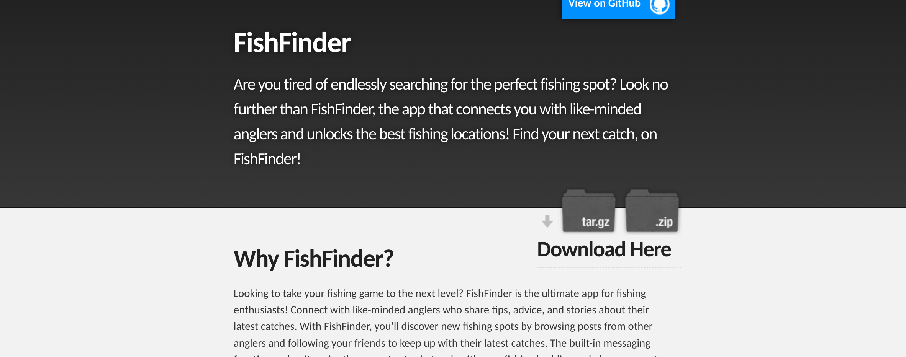

Fish Finder
This social media app was my capstone project at UofSC, Using Kotlin and android studio as well as firebase, our team made an app designed to get you posting and sharing about all your favorite fishing spots! It came including a messaging feature designed by me as well as tons of other fun things to play around with including GPS!